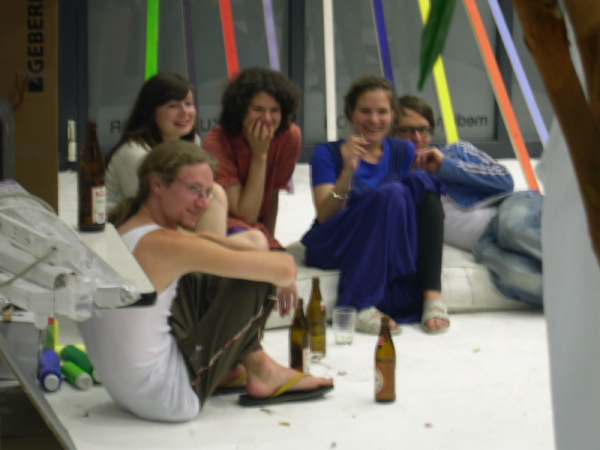

| <--- |  |
---> |
girl.TV-family
Belichtungsart: program (auto)
Art der Belichtungsmessung: matrix
Belichtungszeit: 0.204 s (1/5)
Blendeneinstellung: f/4.9
Entfernung: 24.0mm (35mm equivalent: 114mm)
ISO: 125
Blitz: No
Dateigrösse: 367774 bytes
Kamerahersteller: NIKON
Kameramodell: E4300
Aufnahmedatum: 6. September 2005 21:51:34
Auflösung: 1600 x 1200